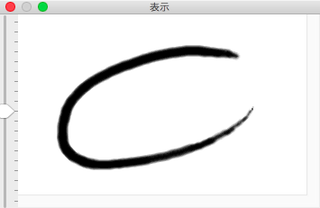

表示ウィンドウ
このウィンドウは本ツールで前面に来ている主ウィンドウで編集している画像の「表示」を行います。
そのため、表示する内容は主ウィンドウと同一のものです。

表示倍率
主ウィンドウでの説明でも触れたように、表示倍率の切り替えにはウィンドウ左側のスライダーを使用します。
このスライダーを上にずらすと拡大、下にずらすと縮小となるようにしています。


表示ウィンドウでは画像全体の状況把握を目的としていますので、縮小表示時には補間をかけます。
ただし、縮小表示したまま表示をスクロールしたり、主ウィンドウで画像を加工・編集したりすると、部分的な再描画を伴った縮小表示となるため、表示がズレた感じになりますのでご注意ください。